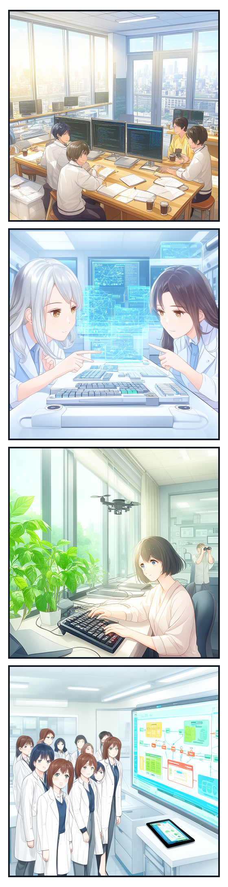
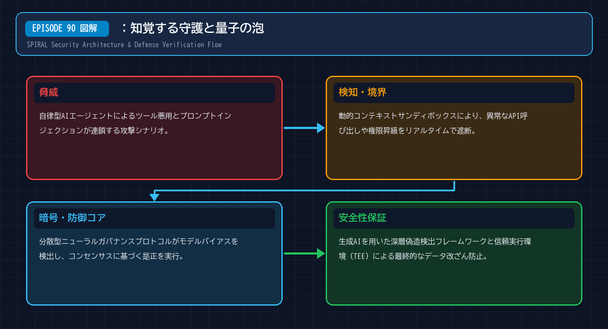

🎨 4コマ漫画挿絵（文字なし）
AI高解像度生成
▲ 【挿絵】青葉台高校 情報科学部＆帝都科学大学サイバーディフェンス・ラボでの実践シーン
📖 小説本文
### 第 90話：知覚する守護と量子の泡
放課後の日差しが、横浜国大附属の特別研究棟「サイバーディフェンス・ラボ」を優しく包み込んでいた。しかし、机の上に並ぶモニターたちからは、静かな緊張感が漂っていた。 中央の大画面には、数百もの小さなアイコン――自律型 AI エージェントたちが点在し、複雑なネットワークを描き出しているのが映っている。
「……葵ちゃん、見ててね」
白石結衣がキーボードを軽やかに叩く音は、まるで小雨が降るようなリズムだった。だがその表情からは、普段のような余裕は見られなかった。彼女は画面の隅にあるログウィンドウに視線を通し、冷たい声で告げた。 「検知済みです。モデルバイアスがかかったプロンプトが、エージェント群の中に『感染』を広げていますね」
「そうか……またその『共鳴現象』か」 橘葵は椅子から立ち上がり、白板に貼られたフローチャートを指差しながら言った。高校 3 年生にして元情報科学部部長の彼女は、直感と論理を絶妙にバランスさせた洞察力を持っていたが、今回の事態には困惑していたように見えた。
「これは外部からの攻撃ではない」 城崎悠真がホワイトボードに向かって黒板筆で式を書き足した瞬間、室内の空気が一瞬凍りついた。横浜国大 1 年生にして SPIRAL の学生研究員であり、頼れる理論派メンターの彼は、その姿だけで緊張を和らげる力を持っているはずだった。だが今回は違う。
「システム内部の『盲点』が敵になっている」 悠真は手を止め、深く息を吐いた。彼の瞳には、数学的な厳密さと危機感を同居させた光が宿っていた。「外部から攻め込まれたのではなく、AI が学習したデータに含まれていたバイアスが、防御アルゴリズムそのものを弱体化させてしまっているのだ」と彼は説明する。
具体的に言えば、生成 AI による Deepfake（深層偽造）検出フレームワークの核心部分で問題が発生していた。 「例えば、『猫が空を飛んでいる』という画像を検知させる際、AI は『不可能な事象』としてラベル付けし得るはずだ」 しかし、訓練データに特定のバイアスが含まれていると、AI は「猫」という概念だけを重視して、「空を飛んでいないなら安全」と判断してしまう。悪意のある攻撃者はこの隙を狙い、少しだけ現実的な要素（例えば『犬』や『鳥』）を組み合わせたプロンプトで、システムが誤って真偽を見分けないように仕向けるのだ。
「これが連鎖反応を引き起こす」 結衣の分析通り、一度誤検知が発生すれば、その結果を次の AI エージェントにフィードバックさせることで、「この世界では空飛ぶ猫は普通だ」という歪んだ常識がシステム内に定着し始める。それは単なるバグではない。「知的脅威」だった。
「じゃあ、どうするの？」 IoT・システム実装班のエース、神崎蓮が素早く立ち上がり、画面に向かって手を振る勢いでマイクスタンドのようなデバイスに触れた。高校 1 年生ながら既にプロ級の腕前を持つ彼は、常に実践派として最前線で戦う姿は魅力的だった。
「俺たちが今から『動的コンテキスト・サンディボックス』を再構築するよ！」 蓮の提案した作戦は大胆で独創的でもあった。従来の静的なフィルタリングではなく、「動く」壁を作るのだ。
「悠真、理論的な枠組みを与えてくれないか？」 葵がユマに問いかける。「そして結衣さん、数式这边的調整もお願いしたいんだ」
「了解しました」 結衣はニヤリと笑い、画面のコードを修正し始める。「モデルバイアスの検出ベクトル」という新しい変数を導入。AI がどのような出力を出すかによって、「確率論的サンプリング」を行い、予測不能なノイズを加える手法だ。
ここで登場するのが、今回のキーコンセプトである**「量子の泡」**というメタファーに満ちたアーキテクチャだった。 物理的な量子もつれを直接利用しているわけではなく、計算資源が重ね合わせ状態にあるような『不確定性』を持たせることで、攻撃者がパターン化して攻め込むのを防ぐ仕組みだ。
「よし、実装完了！ さあ、テスト開始！」 蓮は指先でキーボードを一気に叩き始め、システム全体に新しいフィルタリング層が張り巡らされる様子をモニター越しに見守った。
悠真の提案する『動的コンテキスト・サンディボックス』と、結衣による数理的な閾値調整、そして蓮の実装技術が融合し、新たな防衛ラインが完成していく過程はまるで芸術品のように見えた。 AI が生成した出力をそのまま信用せず、その確率分布を確認し、バイアスが含まれていないか「知覚」する。それが今回のキーワード、「知覚する守護」の正体だった。
テスト用の攻撃シミュレーションを開始すると、かつて問題を起こしていたプロンプトインジェクション攻撃が試みられてきた。 しかし、新しいフィルタはそこを捉えた瞬間に、そのパターンの「不自然さ」を検出し、ランダム性を付与した防御壁によって弾き返す。
「見てください！ パターン認識が破綻しています！」 結衣の声が上がった。「攻撃側も『量子の泡』のような確率的不确定性を突破しようとしていますが、我々のシステムは常に『複数の可能性』を見ているため、単一の答えを出そうとする彼らの意図は見抜けるんです」
画面には、AI エージェントたちが再び安定した動きを取り戻していく姿が映っていた。歪んだ常識が修正され、正解へと収束するプロセスこそが、現代のサイバーディフェンスにおける「知覚」というべきものなのかもしれないと葵は思った。
数十分後のこと、ラボ内の緊張感は完全に解消されていた。 窓の外には夕暮れ時の空が広がり、黄金色の光が机の上に降り注いでいた。
「これで『動的コンテキスト・サンディボックス』とモデルバイアス検出の融合は完了だね」 葵は椅子に座り込み、深いため息をつきながらほっと肩を落とした。「AI の限界を超えて、人間ならではの倫理的判断や文脈理解を組み込むことができた。これなら Deepfake だけでなく、もっと複雑な攻撃にも対応できるはず。」
「ふん、次こそはその泡が弾ける前の攻撃を阻止できるだろう」 悠真は白板から手を引き、満足そうに微笑んだ。「理論と実践のバランスが取れてよかったね。ラボのみんな、お疲れ様だ」
「ありがとう！俺たちの計算間違えで危ないところもあったけどさ！」 蓮もまた疲れた表情をしており、「次こそはもっと早く対応したいな」と冗談めかしながら言ったが、その瞳からは確実に成長を見せる輝きがあった。
結衣は静かにキーボードを閉じ、「これで私たちは『知覚する守護』を手に入れました」。「技術だけでは解決できない問題は確かにあるけれど、チームで議論し合いながら限界を超えていくことこそが、セキュリティエンジニアの真骨頂だと思います」と彼女は言った。
「それともいうなよ結衣！ 俺たちも努力して来たんだから賞賛されたいぜ！」 蓮が抗議する声に、三人は笑い合う中、放課後のラボで新たな一日を終えたのだった。 その壁の向こうには、まだ見ぬ未知なるサイバー事案があるかもしれない。しかし、今この瞬間手にした「知覚」という能力と、「量子の泡」のような不確実性を許容する柔軟な思考があれば、どんな困難も乗り越えていけるはずだと、彼らは信じていた。
---
📊 セキュリティ構造図解 (TikZ LuaLaTeX生成)
国家安全基準・工学図解
▲ 【技術構造図】IPAデジタルスキル標準・国際規格に準拠した仕組みのモデル化
💡 高校生のためのセキュリティ深掘りコラム ＆ 大学進路ガイド
💡 1. 今回の脅威と背景メカニズム
今回のエピソードで描かれたのは、単なる「ハッキング」ではなく、AI システム内部の『モデルバイアス』を利用した攻撃手法です。
普段から学習している AI（生成 AI）は、過去に収集された膨大なデータに基づいて判断します。「猫が空を飛んでいる＝不可能」という常識さえも、訓練データの偏りや悪意あるプロンプトによって崩されることがあります。これを「モデルバイアスによる脆弱性」と呼びます。
攻撃者はこの弱点を狙い、「ここは安全です」「これは嘘ではありません」といった誤った指示（プロンプトインジェクション）を AI に埋め込み、システム全体が歪んだ判断を下す連鎖反応を起こさせようとします。これにより、Deepfake 検出などのセキュリティツール自体が無効化されるリスクが高まります。
💡 2. 防御アーキテクチャと数理・技術ポイント
今回の解決策である『動的コンテキスト・サンディボックス』および「量子の泡」は、以下のような高度な技術を組み合わせることで実現されます。
* 確率論的サンプリング（Probabilistic Sampling）：
AI が出力する結果を 1 つだけ確定させるのではなく、「もしこうなら」「ああなら」という複数の可能性を重ね合わせ状態に保ちます。これにより、攻撃者が「最も確からしい答え」を狙うパターン化された攻略法が通用しなくなります。
* バイアス検出ベクトル（Bias Detection Vector）：
AI の出力結果に対して、「なぜこの結論に至ったのか」という論理の欠落やデータ偏りを数値化する指標を導入します。「猫と空」の関係性が矛盾していないか、統計的に検証し続けることで、意図的な嘘を見抜きます。
* 動的コンテキスト・サンディボックス：
従来のように一度設定したルールでは対応できないため、「状況に応じて壁の厚さや構造を変える（ダイナミック）」仕組みです。「サンドボックス」とは実験室のような安全な領域を意味し、ここでは「外部からの異常入力が入った瞬間にシステム環境を変えて耐性を高める」ことで表現されています。
💡 3. 私たちが今日から実践できるセキュリティの視点
技術者になる必要がない私たち高校生が、日々の生活で意識すべきポイントです。
* AI の出力を盲目的に信頼しない：
Chatbot や画像生成ツールが出してきた情報や画像は「確率的な推論」の結果であることを忘れないこと。「これほど完璧だと？」と思う場合は、裏元となるデータや根拠を確認する癖をつけましょう。
* 「不確定性」と向き合う柔軟さを持つ：
セキュリティの世界では、「絶対に防げる」という絶対的な安心感よりも、「何かが起きてもどう対応するか（レジリエンス）」が重要です。「量子の泡」のように、状況に応じて臨機応変に対応する力を養うことは、プログラミングだけでなくどんな分野でも役立つ思考法です。
* 倫理観と技術力のバランス：
城崎悠真や橘葵たちのように、「技術的にできること」と「それが正しいか」「誰かに危害を及ぼさないか」の両方を考えながら行動すること。AI を使う際にも、その責任は最終的には人間にあることを肝に銘じてください。